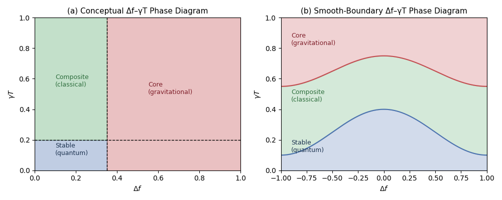

1. Introduction
To describe quantum, classical, and gravitational behavior within a single structural principle, this work adopts the Thickness‑Structure Hypothesis (TSH). TSH introduces three structural parameters characterizing physical existence—$p$ (strength of existence), $\Delta f$ (structural deviation in the spreading direction), and $\gamma_T$ (structural tension in the contracting direction). The $\Delta f$–$\gamma_T$ phase diagram spanned by these parameters classifies the quantum (Stable), classical (Composite), and gravitational (Core) regimes as different structural states of a single underlying action.
The three internal variables of TSH represent the minimal degrees of freedom of physical existence—thickness ($p(x)$), spreading ($\Delta f$), and contracting ($\gamma_T$)—and the differences between the quantum, classical, and gravitational regimes arise from the relative balance among these three quantities.
The central idea of this work is threefold:
- To treat $p(x)$ as the thickness of existence, providing a common basis for describing quantum spreading and gravitational localization[6].
- To classify physical behavior using the $\Delta f$–$\gamma_T$ phase diagram and treat this classification continuously, enabling quantum, classical, and gravitational dynamics to be computed within the same structural framework[6].
- To show that the TSH tensor equation possesses a hierarchical integration slot, allowing any gauge or matter energy–momentum tensor to be added at the action level without modifying the structural dynamics, thereby ensuring compatibility with arbitrary interaction sectors[7].
This phase diagram acts not only as a classification tool but also as a dynamical map that determines the structural force.
2. The $\Delta f$–$\gamma_T$ Phase Diagram
The three internal variables play distinct roles:
-
$p(x)$: strength of existence. It serves as the fundamental quantity that continuously connects the Born rule, classical trajectories, and the localized structure of general relativity.
To clarify the structural role of $p(x)$, TSH treats it not as a probability density but as a fundamental measure of "existence thickness." In the quantum regime, the usual probabilistic interpretation arises as a special case: the Stable phase corresponds to $p(x) = |\psi(x)|^2$, representing a delocalized structural state. In the Core phase, $p(x)$ becomes localized and reproduces gravitational geodesic motion. Thus, probabilistic spreading and gravitational localization are described within a single ontological basis, with their differences arising solely from the structural state ($\Delta f$, $\gamma_T$) of $p(x)$. In this way, probabilistic spreading (Stable) and gravitational localization (Core) emerge as different structural states of the same minimal covariant action built from $p(x)$, $\Delta f$, and $\gamma_T$. Thus, quantum and gravitational behaviors are not described by separate theories but appear as distinct phases of a single action, which is a defining characteristic of TSH.
-
$\Delta f$: Source of fluctuations and nonlocality (determines interference and entanglement)[3,4]
$\Delta f$ represents the structural deviation of $p(x)$ in the spreading direction, and quantifies how much the distribution can sustain superposition and nonlocal correlations. Larger $\Delta f$ corresponds to a more extended configuration of $p(x)$, enabling the formation of interference fringes and the maintenance of entanglement. Thus, $\Delta f$ serves as the structural parameter that directly controls the strength of quantum nonlocality[3,4].
-
$\gamma_T$: Source of phase transitions and irreversibility (internal origin of wave-packet collapse)[5]
$\gamma_T$ represents the structural tension of $p(x)$ in the contracting direction, determining how rapidly the internal structure is driven toward localization. In regions where $\gamma_T$ is large, the structural potential $\Phi_{\text{struct}}$ becomes steep, causing the internal configuration to collapse unidirectionally. This naturally produces wave-packet reduction, irreversibility, and observational localization. Therefore, $\gamma_T$ provides the internal mechanism that drives the phase transition from quantum to classical and gravitational behavior[5].
The phase diagram yields:
- Stable (quantum): small $\Delta f$, small $\gamma_T$
- Composite (classical): moderate $\Delta f$, moderate $\gamma_T$
- Core (gravitational/measurement): large $\Delta f$, large $\gamma_T$[6]
To make the notion of the structural force $F_\mu$ intuitive, it is not an externally applied force but one that arises naturally from the "tilt" of the internal structural state ($\Delta f$, $\gamma_T$). More formally, it is uniquely determined by the variation of the structural potential $\Phi_{\text{struct}}(\Delta f, \gamma_T)$,
so the $\Delta f$–$\gamma_T$ phase diagram functions not only as a classification diagram but as a dynamical map that determines the structural force entering the unified equation of motion.

(a) Conceptual three-phase diagram.
The $\Delta f$–$\gamma_T$ plane is divided into three structural regimes: Stable (quantum), Composite (classical), and Core (gravitational). This schematic representation highlights the classification aspect of TSH: quantum, classical, and gravitational behaviours correspond to distinct structural phases of a single underlying system.
(b) Smooth-boundary phase diagram.
The same three phases appear when the structural boundaries are treated as continuous functions of $\Delta f$ and $\gamma_T$. This representation emphasizes the continuity central to TSH: by varying $\Delta f$ and $\gamma_T$ smoothly, the system transitions continuously between quantum, classical, and gravitational regimes, enabling all three to be computed within a single unified framework.
2.1 Dynamic Feedback Structure
The diagram determines the structural force $F_\mu$, forming a feedback loop:
This loop continuously connects quantum, classical, and gravitational behaviors.
More concretely, the TSH dynamics compute the time evolution of the structural variables through a closed feedback loop. The phase diagram determines the structural force $F_\mu(\Delta f, \gamma_T)$, which enters the unified equation of motion
Solving this equation updates the trajectory and the distribution $p(x)$. The updated $p(x)$ then determines new values of $\Delta f$ and $\gamma_T$, which in turn specify a new point on the $\Delta f$–$\gamma_T$ phase diagram. Thus, the theory explicitly computes
providing a self-contained dynamical cycle in which quantum, classical, and gravitational behaviors arise as different structural phases of the same evolving system.
2.2 Structure Enabling Continuous Connection
To make this mechanism explicit, TSH treats $p(x)$ as a continuous measure of "existence thickness," so that both quantum spreading and gravitational localization correspond to different values of the same scalar field. The internal variables $\Delta f$ and $\gamma_T$ specify the structural state of $p(x)$, and the $\Delta f$–$\gamma_T$ phase diagram organizes these states into quantum, classical, and gravitational regimes. Because the phase boundaries are continuous, changing $\Delta f$ and $\gamma_T$ smoothly moves the system between these regimes without altering the underlying dynamical form. This is why quantum (probabilistic) and gravitational (geometric) behaviors can be computed within a single structural framework: they arise as different structural phases of the same $p(x)$-based dynamics.
2.3 Switching Phenomena near Phase Boundaries
TSH predicts not only a continuous connection between the three regimes but also critical switching behavior near the phase boundaries, where the internal variables $\Delta f$ and $\gamma_T$ change rapidly. As a result, interference fringes exhibit an abrupt on/off transition near the Stable–Composite boundary, while rapid wave-packet collapse occurs near the Composite–Core boundary. These switching phenomena arise directly from the structural dynamics encoded in the $\Delta f$–$\gamma_T$ phase diagram.
2.4 Meaning of the Underlying Structure Supporting the Unified Dynamical Equation
To describe quantum, classical, and gravitational behavior within a single structural principle, this work introduces three structural parameters of physical existence: (i) the existence thickness $p$, (ii) the spreading deviation $\Delta f$, and (iii) the contracting tension $\gamma_T$. These three quantities constitute the minimal structural basis that generates the three regimes (quantum, classical, gravitational) as different phases of the unified dynamical equation $Du^\mu/D\tau = -\nabla^\mu \ln p + F^\mu(\Delta f, \gamma_T)$.
From this viewpoint, the left-hand side of the unified dynamical equation does not directly represent “quantum behavior” or “gravitational behavior” by itself. Rather, it expresses the dynamics of the underlying structural state—namely the evolution of $p$, $\Delta f$, and $\gamma_T$—and the three regimes emerge as different structural states of this underlying system.
The two terms appearing in the unified dynamical equation each have a clear and distinct physical role.
(1) $-\nabla^\mu \ln p$ : the tendency of existence to spread
This term represents the spatial gradient of the thickness density $p(x)$ and plays the same functional role as the Bohm-type quantum potential in quantum mechanics. Whereas a classical particle tends to remain localized at a point, this term drives the thickness distribution to spread like a wave in space. It is therefore the source of quantum-like delocalization and interference.
(2) $F^\mu(\Delta f, \gamma_T)$ : the competition between spreading and contracting degrees of freedom
The structural force $F^\mu$ is determined by the interplay between two internal degrees of freedom, $\Delta f$ and $\gamma_T$. The parameter $\Delta f$ represents fluctuation and nonlocality, enabling interference and entanglement and thus favoring spatial extension. In contrast, $\gamma_T$ acts as a structural tension that drives contraction; when $\gamma_T$ exceeds a critical threshold, the extended configuration collapses rapidly, producing a localization process analogous to wavefunction collapse.
In this way, the two terms of the unified dynamical equation encode the balance between quantum spreading and structural contraction, and the three phases (Stable, Composite, Core) can be understood as different regimes of this balance.
Thus, within TSH, the unified dynamical equation is neither a ‘quantum equation’ nor a ‘gravitational equation,’ but the equation of motion that concretizes the minimal structural principle from which the three regimes emerge depending on the internal structural parameters.
3. Minimal Covariant Action and Unified Dynamical Equation
The minimal covariant action of the framework is[1–6]
Varying this action yields the unified dynamical equation in a form where geometric, quantum, and structural contributions separate cleanly.
Metric variation absorbs all geometric terms—including the Levi-Civita connection—into the left-hand side
preserving the geodesic structure of general relativity.
Variation with respect to the thickness density $p(x)$ produces the quantum contribution
which reduces to the Bohm-type quantum force in the quantum limit.
Finally, variation of the structural potential $\Phi_{\text{struct}}(\Delta f, \gamma_T)$ yields
the structural force uniquely determined by the $\Delta f$–$\gamma_T$ phase diagram.
Combining these contributions gives the unified dynamical equation
in which geometry (left), quantum behavior (middle), and structural dynamics (right) emerge from a single minimal action in a fully separable form. This separability is the core structural feature of the framework[6].
These three terms constitute the minimal decomposition of how the structural state of $p(x)$ tends to change, and the quantum, classical, and gravitational phases appear as different ratios of this decomposition.
This three-term structure can be expressed in an intuitive form as follows.
“the next-step trajectory (left-hand side)
= the quantum tendency to spread (−∇μ ln p)
+ the structural force generated by the competition between
spreading (Δf) and contracting (γT).”
This relation makes explicit how the quantum, classical, and gravitational behaviors branch from a single underlying structural dynamics.
4. Three Regimes
Before presenting the three limiting behaviors, we summarize the structural conditions under which the unified dynamical equation
reduces to the quantum, classical, and gravitational forms. These limits follow directly from the relative magnitudes of the two contributions on the right-hand side.
4.1 Quantum limit (Stable phase)
The quantum regime is characterized by dominance of the thickness-gradient term:
Writing $p = R^2$ yields
so the unified equation reproduces the Bohm-type quantum force[3,4]. This corresponds to small $\Delta f$ and small $\gamma_T$ on the $\Delta f$–$\gamma_T$ phase diagram.
4.2 Classical limit (Composite phase)
The classical regime arises when the thickness density is nearly flat and internal fluctuations are small:
Thus,
and the unified equation reduces to deterministic trajectories[1,2]. This corresponds to the moderate-fluctuation region of the phase diagram.
4.3 Gravitational limit (Core phase / $\Phi \to 0$)
In the geometric limit,
so the unified equation becomes
which is exactly the geodesic equation of general relativity[1,2]. This corresponds to large $\Delta f$ and large $\gamma_T$, where the structural potential collapses.
5. Hierarchical Integration Slot
The TSH tensor equation[7]
satisfies
whenever the internal EOM hold[1,2].
Gauge and matter fields satisfy[7]
Thus,
is consistent at the action level, and the right-hand side acts as a hierarchical integration slot[7] into which any interaction sector can be inserted:
A key structural point is that the TSH tensor equation
is obtained solely from the variation of the structural action $S_{\text{TSH}}$, which depends only on the structural variables $p(x)$, $\Delta f$, and $\gamma_T$. Because gauge and matter fields do not appear in $S_{\text{TSH}}$, the variation of the total action
splits as
Since
the structural equations of motion are identical to those derived from $S_{\text{TSH}}$ alone. Meanwhile, variation of $S_{\text{int}}$ with respect to the metric produces the usual energy–momentum tensor, yielding
Thus the right-hand side functions as a hierarchical integration slot: arbitrary interaction sectors can be inserted without modifying the structural dynamics.
- Standard Model
- GUT fields
- effective string-theoretic fields
- fluids or condensed-matter tensors
without modifying the structural dynamics.
This is not a quantum equation nor a gravitational equation, but the tensorial expression of the minimal structural principle determined by the three internal variables. For this reason, the structural equation remains fully consistent even when arbitrary interaction tensors are inserted on the right-hand side.
6. Conclusion
This work shows that:
- The $\Delta f$–$\gamma_T$ phase diagram provides a structural classification of quantum, classical, and gravitational behaviors[6].
- Treating this classification continuously allows these regimes to be computed within a common dynamical framework[6].
- The dynamical equation derived from the minimal covariant action reproduces the Bohm[3,4], classical, and GR[1,2] limits.
- The hierarchical integration slot ensures compatibility with arbitrary interaction sectors while preserving GR+SM in the classical limit[7].
TSH thus offers a minimal and self-contained structural scheme in which quantum, classical, gravitational, and interaction behaviors can be consistently organized and continuously connected.
References
[1] Misner, C. W., Thorne, K. S. & Wheeler, J. A. Gravitation. W. H. Freeman (1973).
[2] Wald, R. M. General Relativity. University of Chicago Press (1984).
[3] Bohm, D. "A Suggested Interpretation of the Quantum Theory in Terms of 'Hidden' Variables. I." Phys. Rev. 85, 166–179 (1952). doi:10.1103/PhysRev.85.166
[4] Holland, P. The Quantum Theory of Motion. Cambridge University Press (1993). doi:10.1017/CBO9780511622687
[5] Landau, L. D. & Lifshitz, E. M. Statistical Physics. Pergamon (1980).
[6] Hirokazu Abe. Thickness Structure Hypothesis Dynamics. Zenodo (2026). doi:10.5281/zenodo.19564362
[7] Hirokazu Abe. Thickness Structure Hypothesis Hierarchical Integration. Zenodo (2026). doi:10.5281/zenodo.19554152